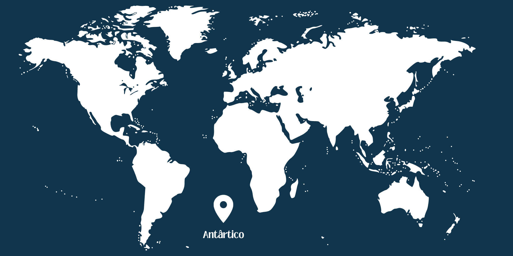
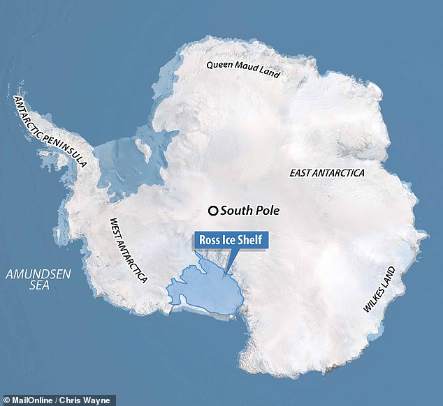
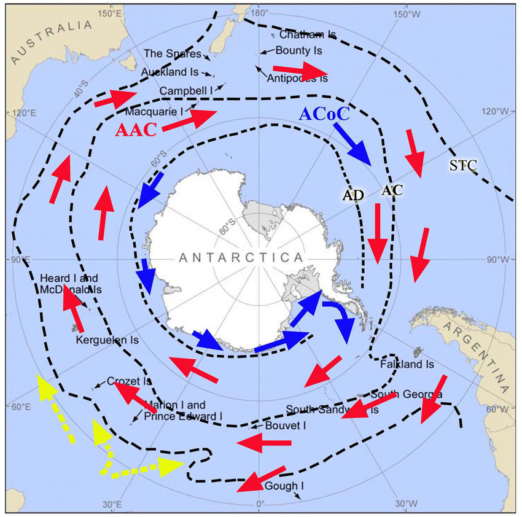
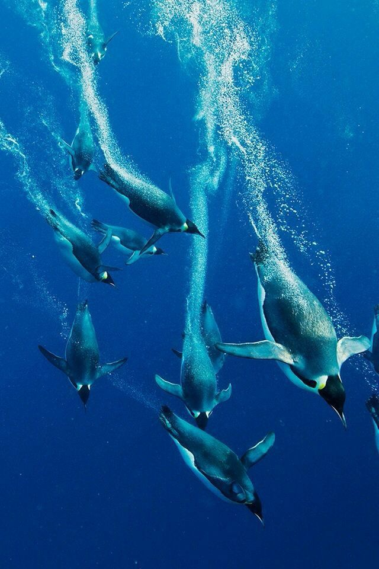

Introdução
O Oceano Antártico, também conhecido como Oceano Austral, é o corpo de água que circunda o continente da Antártida. É o quarto maior dos oceanos do mundo e desempenha um papel crucial no sistema climático global devido à sua influência sobre as correntes oceânicas e à formação de gelo marinho. Este oceano é caracterizado por suas águas frias e ricas em nutrientes, que sustentam uma variedade impressionante de vida marinha.
As águas do Oceano Antártico são algumas das mais frias do planeta, devido à presença constante de gelo marinho e icebergs. Durante o inverno, o gelo marinho pode se estender por milhões de quilômetros quadrados, enquanto no verão, parte desse gelo derrete, mas ainda permanece uma quantidade significativa. Essa variação sazonal é fundamental para a dinâmica do clima global e a biodiversidade marinha.
O Oceano Antártico é também um foco de pesquisa científica. As expedições para essa região têm fornecido insights valiosos sobre as mudanças climáticas, a ecologia marinha e a geologia. A pesquisa no Oceano Antártico é vital para entender os impactos globais das alterações climáticas, uma vez que as mudanças nesta região podem ter consequências de longo alcance para o resto do planeta.
- Menor Continente, Maior Oceano Gelado: Apesar de ser o menor dos continentes, a Antártida é cercada pelo Oceano Antártico, que tem a maior extensão de gelo marinho entre todos os oceanos.
- Pinguins e Suas Colônias Gigantes: A colônia de pinguins-imperadores na Baía de Atka, por exemplo, pode abrigar dezenas de milhares de aves durante a temporada de reprodução, criando uma visão espetacular de vida selvagem em um ambiente extremo.
- Polo Sul Magnético: Ele é crucial para a navegação, pois as bússolas apontam para o polo magnético, e seu deslocamento contínuo é monitorado para garantir a precisão das medições geográficas.
- Explorações Pioneiras: As primeiras expedições ao Oceano Antártico, como as lideradas por James Cook no século XVIII e Ernest Shackleton no início do século XX, enfrentaram desafios extremos, incluindo temperaturas congelantes e mares traiçoeiros.
- Corrente Circumpolar Antártica: A Corrente Circumpolar Antártica é a corrente oceânica mais forte e contínua do mundo, fluindo de oeste para leste ao redor da Antártida.
- Impacto das Mudanças Climáticas: As mudanças climáticas estão afetando drasticamente o Oceano Antártico. O aquecimento global está causando o derretimento acelerado das geleiras e das plataformas de gelo, contribuindo para a elevação do nível do mar.

Localização e Extensão
Geografia
O Oceano Antártico, situado no extremo sul da Terra, rodeia completamente o continente antártico. Cobrindo uma área de aproximadamente 20 milhões de quilômetros quadrados, é o quarto maior oceano do mundo. Suas fronteiras são definidas pelo limite norte da Convergência Antártica, onde as águas frias do Oceano Antártico encontram as águas mais quentes dos oceanos Atlântico, Pacífico e Índico. A geografia do Oceano Antártico é dominada pelo gelo. Durante o inverno, o gelo marinho pode se estender até 18 milhões de quilômetros quadrados, enquanto no verão, a extensão do gelo pode reduzir para cerca de 3 milhões de quilômetros quadrados. Além do gelo marinho, o oceano contém numerosos icebergs, que se desprendem das plataformas de gelo da Antártida e derivam através das águas frias.

Este oceano é também caracterizado por várias massas de água importantes, como o Mar de Weddell, o Mar de Ross e o Mar de Amundsen. Estas regiões são conhecidas por suas condições extremas e são locais importantes para a pesquisa científica. A batimetria do Oceano Antártico inclui profundas bacias oceânicas, cristas subaquáticas e plataformas continentais extensas, que influenciam a circulação das correntes e a distribuição do gelo marinho.
Características Geográficas
O Oceano Antártico é notável por suas correntes oceânicas poderosas e a dinâmica do gelo. A Corrente Circumpolar Antártica (ACC) é a corrente oceânica mais forte e contínua do mundo, movendo grandes volumes de água de oeste para leste ao redor da Antártida. Esta corrente desempenha um papel crucial na regulação da circulação oceânica global, conectando os oceanos Atlântico, Pacífico e Índico e influenciando o clima global.
O gelo marinho é uma característica dominante do Oceano Antártico. Durante o inverno, as temperaturas extremamente baixas fazem com que o gelo marinho se expanda dramaticamente, enquanto no verão, uma parte significativa desse gelo derrete. A espessura do gelo marinho pode variar de poucos centímetros a vários metros, e sua extensão e volume são indicadores importantes das mudanças climáticas. As plataformas de gelo, como a Plataforma de Gelo de Ross e a Plataforma de Gelo de Filchner-Ronne, são extensões de gelo que flutuam sobre o oceano e estão conectadas à Antártida. Estas plataformas são alimentadas pelo fluxo de gelo das geleiras do continente e desempenham um papel crítico na dinâmica do gelo da Antártida. O derretimento das plataformas de gelo pode contribuir para o aumento do nível do mar e afetar a circulação oceânica.
Fenômenos Climáticos
Clima e Gelo
O clima do Oceano Antártico é extremamente frio, com temperaturas frequentemente abaixo de zero durante todo o ano. O gelo marinho é uma característica dominante desta região e desempenha um papel vital na regulação do clima global. Durante o inverno, a extensão do gelo marinho pode alcançar até 18 milhões de quilômetros quadrados, enquanto no verão, essa extensão reduz significativamente, mas ainda cobre uma área vasta. O gelo marinho afeta o albedo, ou seja, a capacidade de refletir a radiação solar. Áreas cobertas por gelo refletem mais luz solar de volta ao espaço, ajudando a manter as temperaturas globais mais baixas. À medida que o gelo derrete, essa capacidade diminui, contribuindo para o aquecimento global. Este ciclo de feedback é uma das razões pelas quais o monitoramento do gelo marinho é crucial para entender e prever as mudanças climáticas.

Correntes Oceânicas e Circulação
As correntes oceânicas no Oceano Antártico são essenciais para a circulação global dos oceanos e para a redistribuição de calor e nutrientes. A Corrente Circumpolar Antártica (ACC) é a corrente oceânica mais poderosa e contínua do mundo, fluindo de oeste para leste ao redor da Antártida. A ACC conecta os oceanos Atlântico, Pacífico e Índico, e é fundamental para a regulação do clima global. A Corrente Circumpolar Antártica transporta grandes volumes de água fria e rica em nutrientes, influenciando a produtividade dos ecossistemas marinhos ao longo de sua rota. Além disso, essa corrente desempenha um papel crucial na formação de água de fundo antártica, uma massa de água fria e densa que se forma na superfície e afunda, contribuindo para a circulação termohalina global. Esta circulação ajuda a redistribuir calor e nutrientes ao redor do planeta, afetando o clima e a saúde dos ecossistemas marinhos.
Outro aspecto importante das correntes oceânicas do Oceano Antártico é a sua interação com o gelo marinho e as plataformas de gelo. As correntes de água mais quente podem alcançar a base das plataformas de gelo, acelerando o seu derretimento. Isso não só contribui para o aumento do nível do mar, mas também influencia a estabilidade das correntes oceânicas. A pesquisa contínua sobre estas interações é vital para entender os impactos das mudanças climáticas e desenvolver estratégias de mitigação.
Biodiversidade

O Oceano Antártico é um dos ecossistemas marinhos mais ricos em biodiversidade do mundo. Suas águas frias e ricas em nutrientes sustentam uma vasta gama de vida marinha, desde o pequeno plâncton até grandes mamíferos marinhos. O fitoplâncton, que floresce nas águas frias e ricas em nutrientes, forma a base da cadeia alimentar marinha, sustentando uma abundância de zooplâncton, peixes, krill, aves marinhas, focas e baleias. Essa produtividade biológica é essencial para a saúde dos ecossistemas marinhos e tem um impacto significativo na pesca global.
O krill antártico é uma espécie fundamental nos ecossistemas marinhos do Oceano Antártico. Esses pequenos crustáceos são uma fonte de alimento crucial para muitas espécies, incluindo pinguins, focas e baleias. Durante o inverno, o krill se alimenta de algas que crescem no gelo marinho, enquanto no verão, eles migram para águas mais abertas para se alimentar de fitoplâncton. As variações na população de krill podem ter impactos significativos em toda a cadeia alimentar, tornando esta espécie um indicador importante da saúde do ecossistema antártico.
Os pinguins são alguns dos habitantes mais icônicos do Oceano Antártico. Espécies como o pinguim-imperador e o pinguim-de-adélia dependem do gelo marinho para reprodução e alimentação. Esses pinguins nidificam em colônias densas e criam seus filhotes nas plataformas de gelo durante o inverno antártico. Além dos pinguins, o Oceano Antártico abriga várias espécies de focas, como a foca-de-weddell e a foca-leopardo, bem como diversas espécies de baleias, incluindo a baleia-azul e a baleia-minke. Esses mamíferos marinhos são adaptados às condições extremas do oceano e desempenham papéis ecológicos vitais em seus habitats.
A vida marinha no Oceano Antártico desenvolveu adaptações únicas para sobreviver nas condições extremas. Muitas espécies possuem mecanismos para evitar o congelamento, como a produção de proteínas anticongelantes. Peixes antárticos, como os nototenioides, têm proteínas anticongelantes em seu sangue que evitam a formação de cristais de gelo, permitindo que eles sobrevivam em águas abaixo do ponto de congelamento. Além disso, muitos organismos marinhos, como o krill, são capazes de sobreviver longos períodos com pouca ou nenhuma comida durante o inverno, quando a produção primária é baixa. Essas adaptações notáveis permitem que a vida prospere em um dos ambientes mais desafiadores da Terra.
Impactos Ambientais e Conservação
Desafios
O Oceano Antártico, apesar de sua aparente intocabilidade, enfrenta uma série de desafios ambientais que ameaçam sua biodiversidade única. Um dos principais impactos é o resultado das mudanças climáticas globais. O aumento das temperaturas está causando o derretimento acelerado do gelo marinho e das plataformas de gelo, afetando diretamente os habitats de espécies como os pinguins e o krill, essenciais para a teia alimentar marinha. A pesca predatória também representa uma ameaça significativa para a vida marinha no Oceano Antártico. A exploração excessiva de espécies como o krill, fundamental para a cadeia alimentar, pode causar desequilíbrios ecológicos graves. Além disso, a captura acidental de espécies não alvo e a destruição dos habitats marinhos são preocupações adicionais que exacerbam os impactos negativos sobre a biodiversidade.
Conservação Marinha
Para enfrentar esses desafios, são necessárias medidas de conservação robustas. Uma estratégia chave é o estabelecimento de Áreas Marinhas Protegidas (AMPs). Essas áreas podem ajudar a preservar habitats críticos e minimizar a pesca predatória, garantindo assim a sustentabilidade dos ecossistemas marinhos no Oceano Antártico. Além disso, é fundamental implementar medidas de monitoramento e regulação da pesca para garantir práticas sustentáveis. Isso inclui estabelecer cotas de pesca, áreas fechadas à pesca e adotar práticas seletivas e responsáveis. A conscientização pública também desempenha um papel crucial na conservação marinha, aumentando a compreensão sobre a importância da biodiversidade antártica e os impactos das atividades humanas. Essa abordagem colaborativa e multifacetada é essencial para garantir um futuro sustentável para o Oceano Antártico e suas espécies únicas.